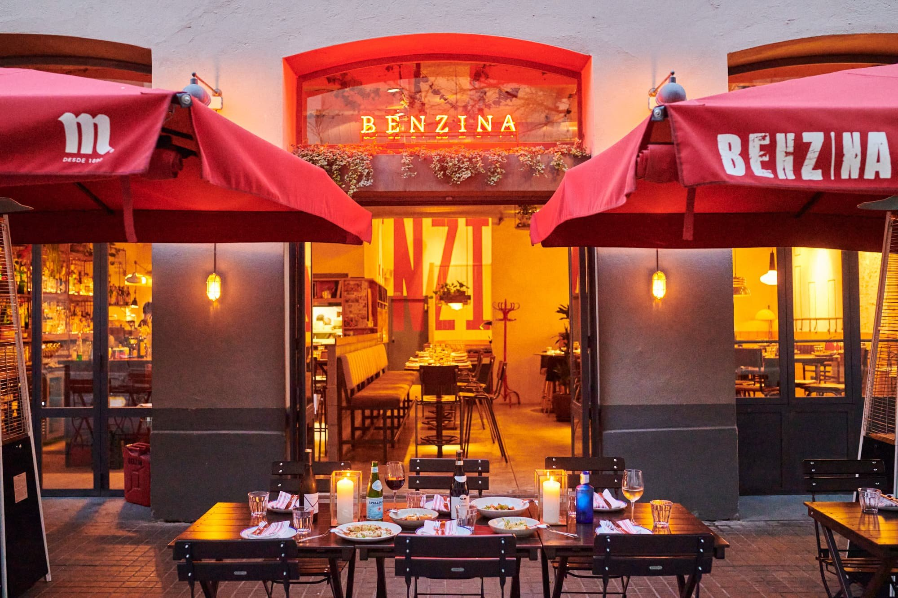
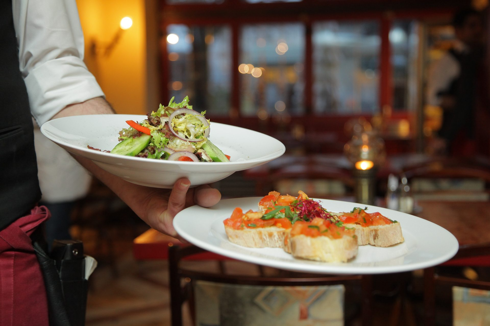

|  | Todo comenzo en 2000 cuando nuestros fundadores Dayana , y Elias y Abigail |
|  | Hoy en dia es la franquicia de comida más grande que se ha visto nunca con mas de 1,000 restaurantes y hoy en dia es una de los restaurantes más famosos del mundo. |